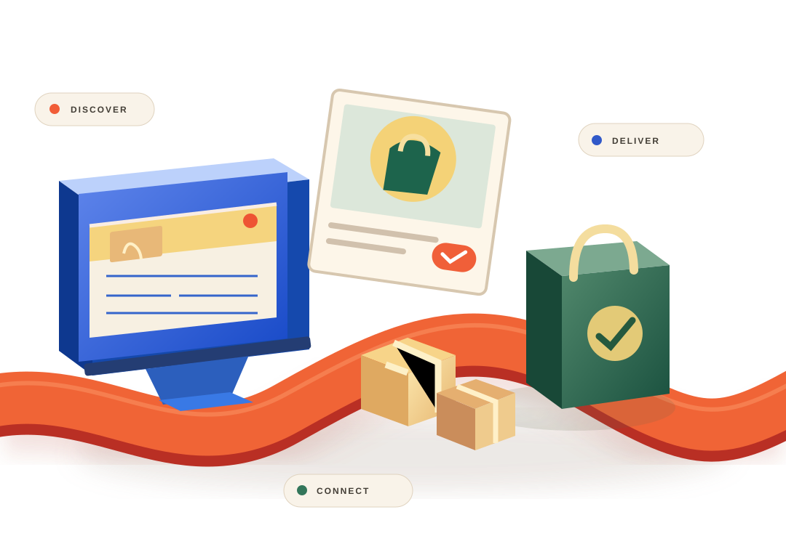

01 / DISCOVERY
Right products.
Wrong audience.
Relevant shoppers need to find and understand what makes an offer worth considering.
INDUSTRY 03 / DIGITAL COMMERCE
Getting attention is only the beginning. Turn discovery into useful conversations, smooth follow-through and a more connected online business.
DISCOVER → CONSIDER → ORDER → RETURN

CONCEPTUAL ILLUSTRATION / NOT A CLIENT STORE
01 / WHERE THE CUSTOMER JOURNEY BREAKS
From unanswered product questions to disconnected fulfilment updates, small friction points make it harder for customers and teams to move forward.
Relevant shoppers need to find and understand what makes an offer worth considering.
Slow or fragmented conversations can interrupt a purchase decision.
Customers and teams benefit from clearer next steps after an order is received.
02 / THE CONNECTED COMMERCE STORY
Explore an illustrative product and packaging showcase as a story about customer discovery, understanding, coordination and follow-up. No item shown here is a real product for sale, an operating store, a checkout, a confirmed order, or a client case study.
Scroll forward to reveal each stage · Scroll backward to revisit · Use the stage controls below to jump directly to any moment.
Put a clear offer in front of relevant shoppers. Help them understand what is being presented before asking them to act.
REACH / OFFER CLARITYCommunicate important product details and limitations so customers can make more informed decisions, without invented reviews or product claims.
PRODUCT INFORMATION / COMMUNICATIONClarify who handles order-related questions, customer updates and internal responsibilities. This example does not place or fulfil orders.
TEAM OWNERSHIP / CUSTOMER UPDATESStay relevant through permission-based communication and useful aftercare, with realistic expectations for future engagement.
AFTERCARE / RESPONSIBLE RETENTION03 / CONNECT THE MOMENTS
Explore an example customer experience, and how digital commerce teams might reduce friction at each stage.
GET SEEN / MAKE A PROMISE CLEAR
Present the right offer clearly so shoppers understand its value and know how to enquire or buy.
04 / WHAT TAAMERAT360 CAN SUPPORT
Our focus is growth, sales communication and business operations. Payment processing, logistics and guaranteed revenue outcomes are not implied.
Help relevant audiences discover an offer worth exploring.
Explore this packageOrganise timely answers and move conversations forward.
Explore this packageReduce repetitive work and keep internal handovers clear.
Explore this packageAlign customer engagement and operational follow-through.
Explore this package05 / PROOF BEATS PROMISES
Approved store examples, screenshots, business outcomes and customer testimonials belong here. These are placeholders until we have verifiable permission to publish them.
Discuss your business opportunityVERIFIED E-COMMERCE CASE STUDY
[Verified challenge, solution scope and measurable outcomes]
06 / SHAPE YOUR NEXT STEP
Choose three simple details. We’ll assemble a brief you can copy into a proposal conversation. No information is sent automatically.
Choose your business type and main challenges, then create a starting brief.
Your selections remain in this browser unless you choose to share them.
E-COMMERCE / THE NEXT CONVERSATION
Tell us what is slowing your online business down. We’ll help define a realistic next step and an agreed scope.
Start a conversation